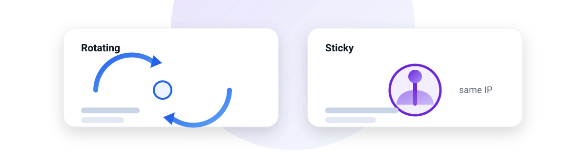

Proxy
ProxyEmpieza aquí

Guía
Residenciales vs datacenter
Cuál necesita realmente tu scraper — y cuándo pagar por IP residencial es tirar el dinero.
Leer la guía →
Guía
Probar un proxy antes de comprar
Qué medir, por qué la latencia es la métrica equivocada y la segunda prueba que casi nadie hace.
Leer la guía →
Diagnóstico
Por qué te bloquean el proxy
Siete causas reales, en el orden en que ocurren, y cómo saber qué capa está fallando.
Leer la guía →
Infraestructura
Sesiones rotativas vs fijas
Resuelven problemas opuestos, y elegir mal falla en silencio: tus datos quedan mal sin avisar.
Leer la guía →Todos los artículos
- 01 Proxies residenciales vs datacenter: cuál necesita tu scraper →
- 02 Cómo probar un proxy antes de comprarlo →
- 03 Por qué te bloquean el proxy: siete causas reales →
- 04 Sesiones rotativas vs fijas: cuándo falla cada una →
- 05 Precio de proxies: por GB o por IP →
Qué es este sitio
ProxyStack publica notas prácticas sobre la parte de infraestructura de la recolección de datos: proxies, automatización de navegador, máquinas remotas y el tooling alrededor. El objetivo es concreto: ayudarte a elegir bien una vez, en lugar de recomprar tres veces.
- Describimos para qué no sirve una herramienta, no solo para qué sirve.
- No publicamos precios o límites inventados. Cuando un dato es incierto, enlazamos a la página de precios del proveedor y lo decimos.
- Las relaciones de afiliación se declaran en cada página donde existen y nunca deciden el orden.
Algunos enlaces de este sitio están monetizados. Llevan
rel="sponsored" y nunca afectan a lo que se recomienda.